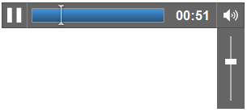

Learn HTML5 in 5 Minutes!学习HTML5在5分钟!By Jennifer Marsman由詹妮弗Marsman There’s no question, HTML5 is a hot topic for developers. 毫无疑问,HTML5对于开发者来说是一个热门话题。If you need a crash course to quickly understand the fundamentals of HTML5’s functionality, you’re in the right place.如果你需要一个速成班迅速了解了HTML5功能的基础,你是在正确的地方。 I’ll cover the new semantic markup, canvas for drawing and animation, audio and video support, and how to use HTML5 with older browsers. 我将介绍新的语义标记,帆布画和动画、音频和视频的支持,以及如何使用HTML5与老版本浏览器。Might be a bit more than five minutes, but I promise I’ll keep it quick. 可能五分钟多一点,但我保证让它快。Stick with me…it’ll be worth it!坚持我…这将是值得的! Semantic Markup and Page Layout语义标记和页面布局There’s a great story about a university who, when building their campus, didn’t create any walking paths. 有一个伟大的故事,一个大学,在构建他们的校园,没有产生任何行走路径。They just planted grass and waited.他们只是种植草和等待着。 A year later, the grass was all worn out where people walked most frequently. 一年后,草都是疲惫不堪,人们最常走去。So that’s where the university paved the actual sidewalks.这就是大学了实际的人行道。 It makes perfect sense! 它很有道理!The sidewalks were exactly where people actually walked.人行道上哪里人真的走了。 The HTML5 new semantic elements were based on that exact same logic (see theHTML5新语义元素是基于相同的逻辑(请参阅W3C design guidance to “Pave the Cowpaths”W3C设计指导“Cowpaths铺平道路”). Semantic elements describe their meaning or purpose clearly to the browser and to the developer. 语义元素描述他们的意义或目的显然浏览器和开发人员。Contrast that with (for example) the <div> tag. 对比之下,(例如)< div >标记。The <div> tag defines a division or a section in an HTML document, but it doesn’t tell us anything about its content or convey any clear meaning.< div >标记定义一个部门或一个部分在HTML文档中,但它并没有告诉我们任何关于其内容或传达任何明确的意思。 Developers commonly use IDs and/or class names with these <div> tags. 开发人员通常都使用id和/或类名与这些< div >标签。This conveys more meaning to the developers, but unfortunately, it doesn’t help browsers derive the purpose of that markup.这个开发人员传达更多的意义,但不幸的是,它不会帮助浏览器获得标记的目的。 In HTML5, there are new semantically rich elements that can convey the purpose of the element to both developers and browsers.在HTML5,有新的语义丰富的元素,可以传达的目的元素开发人员和浏览器。 The W3C mined billions of existing webpages to discover the IDs and class names that developers were already using. W3C现有开采数十亿网页发现开发人员已经使用id和类名。Once they threw out div1, div2, etc., they came up with a list of rich descriptive elements that were already being used, and made those the standards.一旦他们否决了div1 div2,等等,他们列出了一个丰富的描述元素已经被使用,并使这些标准。 Here are a few of the new semantic elements in HTML5:这里有一些新的HTML5的语义元素:
Because of the semantic richness, you can probably guess what most of these elements do.由于语义丰富,你大概可以猜出这些元素。 But just in case, here’s a visualisation:但以防,这里有一个可视化: Headers and footers are self-explanatory and nav creates a navigation or menu bar. 页眉和页脚是自解释的,nav创建一个导航菜单栏。You can use sections and articles to group your content. 您可以使用部分和文章来组织你的内容。Finally, the aside element can be used for secondary content, for example, as a sidebar of related links.最后,除了元素可用于次要的内容,例如,作为一个侧边栏的相关链接。 Here is a simple example of some code that uses these elements.这是一个简单的例子使用这些元素的一些代码。 I should call out a few other new elements in this code…我应该打电话给其他一些新元素在这段代码中… Did you notice the hgroup element, which grouped together my h1 and h2 headers?你有没有注意到hgroup元素,组合在一起我的h1和h2标题吗? The mark element allowed me to highlight or mark some important text. 标记元素允许我突出或马克一些重要的文本。Finally, the figure and figcaption elements specify a figure in my content (like an image, diagram, photo, code snippet, etc.) and let me associate a caption with that figure, respectively.最后,图和figcaption元素指定一个图在我的内容(如图像、图表、照片、代码片段,等等),让我把标题与图,分别。 Here’s what that webpage would look like when combined with some CSS. 这是网页将会是什么样子当结合一些CSS。(NOTE: I borrowed this CSS from my talented teammate Brandon Satrom’s(注意:我从天赋的队友借这个CSS布兰登SatromTechEd talkTechEd说话, but the less-than-beautiful end effect was all me.)都是我,但less-than-beautiful结束的影响。) Now, imagine this in the hands of someone actually good at CSS (which I am not). 现在,想象这手中的有人擅长CSS(我不是)。The result is pretty powerful. 结果是很强大的。The descriptiveness of the HTML makes it super easy to work with.HTML的叙述很容易处理。 Finally, if you’re trying to follow along in Visual Studio but you’re seeing squiggly lines everywhere that VS doesn’t understand the HTML5 elements,最后,如果你想跟随在Visual Studio但你看到世界各地的波浪线,VS不明白HTML5元素,make sure you have确保你有Visual Studio2010 SP1视觉Studio2010 SP1installed.安装。 Then, in the Visual Studio menu, go to Tools, Options. 然后,在Visual Studio菜单,工具,选项。In the left-hand navigation pane, expand Text Editor, HTML, and then click Validation. 在左边的导航窗格中,展开的文本编辑器,HTML,然后点击验证。From the Target dropdown menu, select HTML5. 从目标下拉菜单,选择HTML5。This will give you HTML5 IntelliSense support. 这会给你HTML5智能感知的支持。Whew!唷! × To dive deeper into semantic elements, check out:深入研究语义元素,查看:
Drawing in HTML5 using the Canvas element在使用HTML5画布元素Another new element in HTML5 is the <HTML5的另一个新元素是<canvas帆布> tag. >标签。It’s just what it sounds like——a blank surface for drawing. 这正是这听起来像是——一个空白的表面图。You need to use JavaScript to manipulate and draw on the canvas.您需要使用JavaScript操纵和画在画布上。 You may want to give your canvas element an id attribute so you can programmatically access it from your JavaScript code (or if you’re using jQuery and it’s the only canvas on the page, you could access it using $(‘canvas’) without needing to name it).你可能想要给你的画布元素一个id属性,这样你就可以以编程方式访问它从您的JavaScript代码(或如果你使用jQuery的唯一的页面上的画布,你可以访问它使用$(“画布”),而不需要名称)。 You can also (optionally) specify a height and a width for the canvas. 你也可以(可选)指定高度和宽度的画布。Between the <canvas> and </canvas>, you can specify some text to display in browsers that don’t support the canvas element.<帆布>和< /帆布>,您可以指定一些文本显示在浏览器不支持画布元素。 Here is a simple example of using the canvas to draw. 这是一个简单的例子使用帆布画。(I’m attempting to draw the(我试图画出flag of Scotland苏格兰国旗. 。Please forgive any inaccuracies.)请原谅任何错误。) Here’s what the code produces:下面是代码生成: Now let’s walk through the code.现在,让我们走进代码。 First, I create the actual canvas and give it an ID of “myCanvas”. 首先,我创建的实际帆布和给它一个ID“myCanvas”。If this code were viewed in a browser that doesn’t support the HTML5 canvas element, it would display “Your browser does not support the canvas tag” instead of drawing the flag.如果这段代码在浏览器中查看不支持HTML5 canvas元素的,它会显示“您的浏览器不支持canvas标记”而不是画国旗。 Next, I have a script.接下来,我有一个脚本。Remember, the canvas tag is only a container for graphics; 记住,canvas标签只是一个容器图形;you must use JavaScript to actually draw and render graphics on it. 您必须使用JavaScript来画和渲染图形。First, I grab a reference to the canvas using the “myCanvas” ID, and then get the canvas’s context which provides methods/properties for drawing and manipulating graphics on the canvas. 首先,我抓住一个引用到画布上使用“myCanvas”ID,然后让画布的背景提供了图纸和操作方法/属性图形在画布上。I specified “2d” to use a 2-dimensional context to draw on the page.我指定的“二维”使用二维背景画在页面上。 Then, I draw the blue rectangle.然后,我画出蓝色矩形。I use fillStyle to specify the blue color. 我使用fillStyle指定蓝色。I use fillRect to draw the rectangle, specifying the size and position. 我使用fillRect画矩形,指定大小和位置。Calling调用fillRectfillRect(0, 0, 125, 75) means: starting at position (0, 0)——the upper left-hand corner——draw a rectangle with width=125 pixels and height=75 pixels.(0,0,125,125)的意思是:开始位置(0,0),左上角,画一个矩形的宽度和高度= 75 = 125像素像素。 Finally, I draw the white X on the flag.最后,我画国旗上的白色X。I first call beginPath to start the process of painting a path. 我第一次叫beginPath开始画一条路径的过程。I specify a lineWidth of 15 pixels (using the guess-and-check method of trying different values until it looked correct) and a strokeStyle of “white” to make the path’s color white. 我指定的线宽15像素(使用guess-and-check方法尝试不同的值,直到它看起来正确的)和strokeStyle“白色”路径的颜色白色。Then I trace out the path using moveTo and lineTo. 然后我跟踪路径使用函数和画线。These methods position a “cursor” for you to draw; 这些方法的位置你画“光标”;the difference is that moveTo moves the cursor without drawing a line and lineTo draws a line while moving. 所不同的是,移至移动光标没有画线、画线画一条线而移动。I start by moving to position (0, 0)——the upper left-hand corner——and then drawing a line to (125, 75)——the lower right-hand corner. 我开始通过移动位置(0,0),左上角,然后画一条线(125、75)——右下角。Then I move to position (125, 0)——the upper right-hand corner——and draw a line to (0, 75)——the lower left-hand corner. 然后我搬到位置(125,0),右上角,画一条线(0,75)——左下角。Finally, the stroke method actually renders these strokes.最后,中风的方法使这些中风。 Quick Comparison of Canvas vs. SVG快速的画布和SVG的比较Scalable Vector Graphics (SVG) is an earlier standard for drawing in a browser window. 可���放矢量图形(SVG)是一种早期的标准图纸在浏览器窗口中。With the release of HTML5’s canvas, many people are wondering how they compare.释放HTML5的画布上,很多人都想知道他们如何比较。 In my eyes, the biggest difference is that canvas uses immediate mode rendering and SVG uses retained mode rendering.在我看来,最大的区别是,帆布使用快速方式呈现和SVG使用保留模式呈现。This means that canvas directly causes rendering of the graphics to the display. 这意味着帆布直接导致渲染的图形显示。In my code above, once the flag is drawn, it is forgotten by the system and no state is retained. 在我上面的代码,一旦画国旗,这是被遗忘的系统和不保留状态。Making a change would require a complete redraw. 改变需要一个完整的重绘。In contrast, SVG retains a complete model of the objects to be rendered. 相反,SVG的保留一个完整的模型对象呈现。To make a change, you could simply change (for example) the position of the rectangle, and the browser would determine how to re-render it. 做出改变,你可以改变(例如)矩形的位置,和浏览器将决定如何重新呈现。This is less work for the developer, but also more heavyweight to maintain a model.这是开发人员的工作更少,也更重量级的维护模型。 The ability to style SVG via CSS in addition to JavaScript is worth calling out as another consideration. 通过CSS样式SVG的能力除了JavaScript值得呼唤作为另一个考虑。A canvas may be manipulated through JavaScript only.一个帆布可以通过JavaScript操纵。 Here is a high-level overview of other differences:这是一个高度概括的其他差异:
For a more detailed comparison, I want to point you to some sessions (from which I pulled this fabulous table, with permission):更详细的比较,我想说你一些会话(我把这个令人难以置信的表,许可):
Audio and Video Support音频和视频支持One of the big features that is new in HTML5 is the ability to support playing audio and videos. 的一大特点,是新的在HTML5支持播放音频和视频的能力。Prior to HTML5, you needed a plug-in likeHTML5之前,你需要一个插件SilverlightSilverlightor或Flash闪光for this functionality. 对于这个功能。In HTML5, you can embed audio and video using the new <audio> and <video> tags.在HTML5中,可以嵌入音频和视频使用新的<音频>和<视频>标签。 From a coding perspective, the audio and video elements are very simple to use. 从编写代码的角度来看,音频和视频元素是非常简单易用。(I’ll give you a more in-depth look at their attributes below.) (我将给你一个更深入的看他们的属性如下。)The audio and video elements are also supported in all major browsers (the latest versions of Internet Explorer, Firefox, Chrome, Opera, and Safari). 还支持音频和视频元素在所有主要浏览器(ie浏览器的最新版本,Firefox、Chrome,Opera,和Safari)。However, the tricky part is that you need codecs to play audio and video, and different browsers support different codecs. 然而,需要注意的是,您需要编解码器播放音频和视频,和不同的浏览器支持不同的编解码器。(For a wonderful in-depth explanation of video containers and codecs, read http://diveintohtml5.org/video.html.)(对于一个很棒的深入解释视频容器和编解码器,阅读http://diveintohtml5.org/video.html。) Fortunately, this isn’t a show-stopper.幸运的是,这不是一个贷款。The support for audio and video was implemented in a brilliant way,支持音频和视频是才华横溢的方式实现的,where there is support to try several different file formats (the browser will try each and then drop down to the next one if it can’t play it).哪里有支持尝试几个不同的文件格式(浏览器将尝试每个然后下降到下一个,如果它不能播放)。 As a best practice, you should provide multiple sources of audio and video to accommodate different browsers.作为一项最佳实践,应该提供多个源的音频和视频,以适应不同的浏览器。You can also fallback to Silverlight or Flash. 你也可以回退到Silverlight或闪光。Finally, any text between the opening and closing tags (such as <audio> and </audio>) will be displayed in browsers that do not support the audio or video element.最后,打开和关闭之间的任何文本标签(如<音频>和< /音频>)将显示在浏览器不支持音频或视频元素。 For example:例如: With this code, the browser will first try to play the laughter.在这段代码中,浏览器会首先尝试玩笑声。mp3 file. mp3文件。If it does not have the right codecs to play it, it will next try to play the laughter.如果它没有正确的编解码器打它,它会下试着笑声。ogg file. ogg文件。If the audio element is not recognized at all by the browser, it will display the text “Your browser does not support the audio element” where the audio control should be.如果音频元素没有认可由浏览器,它将显示文本“浏览器不支持音频元素”的音频控制。 One caveat to audio and video: there is no built-in digital rights management (DRM) support; 音频和视频的一个警告:没有内置的数字版权管理(DRM)的支持;you have to implement this yourself as the developer. 你必须实现这个自己的开发人员。See看到this link这个链接from the W3C which explains their position. 从W3C解释自己的立场。(If you have a need for DRM content, also check out the(如果你需要DRM内容,也看看Silverlight DRM documentationSilverlight DRM文档, which might be an easier solution.),这可能是一个容易的解决方案。) Now let’s dive into each of these new elements.现在让我们深入这些新元素。 Audio音频First, let’s look at <audio> in more detail.首先,让我们更详细地看看<音频>。 We already discussed the fallback effect of trying each source until it hopefully finds one that can be played.我们已经讨论了应变的影响在每个源,直到它希望找到一个可以玩。 Note that there is a controls attribute. 请注意,有一个控件属性。This will display audio playback controls including a play/pause button, the time, a mute button, and volume controls. 这将显示音频播放控制包括播放/暂停按钮,时间,静音按钮和音量控制。In most situations, it’s good to display audio controls to the user;在大多数情况下,这是很好的音频控制显示给用户;I hate visiting a website with sound and being unable to stop it, mute it, or turn it down.我讨厌访问一个网站用声音和无法阻止它,沉默的,或者把它下来。Don’t you?你不? Here’s what the audio controls look like in Internet Explorer:这就是音频控制在Internet Explorer看起来像: The controls look different in different browsers. 在不同的浏览器控件看起来不同。Here are what they look like in Chrome (with a song playing). 下面是他们的长相在Chrome(播放歌曲)。The drop-down volume pops down when you hover over the sound icon on the far right.下拉卷出现当你悬停在声音的图标。  Here are the controls in Firefox (with a song paused). 这是控制在Firefox(一首歌停了下来)。Like Chrome, it also has a pop-up volume control (not shown) when you hover over the sound icon on the far right.像Chrome,它也有一个弹出音量控制(图中未显示)当你悬停在声音的图标。 Other fun attributes on the audio element include:其他有趣的属性在音频元素包括:
So this code sample would not only display audio playback controls, but also start the audio playing immediately and repeat it over and over in a loop.这代码示例不仅会显示音频播放控制,但也立即启动音频播放,重复一遍又一遍的循环。 If you’d like to play around with the <audio> element yourself in your browser, there is a great “Tryit Editor” on如果你想玩的<音频>元素自己在您的浏览器中,有一个伟大的“Tryit编辑器”http://w3schools.comhttp://w3schools.comthat allows you to edit some sample code and see what happens. 允许您编辑一些示例代码,看看会发生什么。Or try the或者尝试一下How to add an HTML5 audio player to your site如何为你的网站添加一个HTML5音频播放器article.篇文章。 Video视频Now, let’s examine the <video> element.现在,让我们检查<视频>元素。 As we discussed above, the video element has support for multiple sources, which it will try in order and then fall down to the next option.正如我们上面所讨论的,视频元素支持多个数据源,它会为了然后下降到下一个选择。 Like audio, video has a controls attribute. 如音频、视频控制属性。Here is a screenshot of the video controls in Internet Explorer:这是一个视频控制在Internet Explorer的截图: Other fun attributes of the video element include:其他有趣的视频元素的属性包括:
Again, to play around with the <video> element yourself, use the “Tryit Editor” from再次,与<视频>元素自己玩耍,使用“Tryit编辑器”http://w3schools.comhttp://w3schools.comthat allows you to edit some sample code and see what happens.允许您编辑一些示例代码,看看会发生什么。 To learn more about video and audio, check out:学习更多关于视频和音频,请查看:
Develop with HTML5 while retaining support for older browsers开发HTML5,同时保留对老版本浏览器的支持We’ve discussed a lot of cool new functionality in HTML5, including the new semantic elements, the canvas tag for drawing, and the audio and video support.我们讨论了很多很酷的新功能在HTML5,包括新的语义元素,canvas标记图,音频和视频支持。 You may think that this stuff is really cool, but you can’t possibly adopt HTML5 when many of your users don’t have HTML5-compatible browsers yet.你可能认为这东西是很酷的,但你不可能采用HTML5当许多用户还没有HTML5浏览器。Not to mention that the browsers that DO support HTML5 support different pieces of it; 更不用说的浏览器支持HTML5支持不同的;not all of the new HTML5 functionality is supported in all browsers and various features may be implemented differently.并不是所有的新的HTML5功能支持所有浏览器和各种特性可能以不同的方式实现。 But there is a way to use the new features without breaking your site for users with older browsers. 但有一种方法可以使用新特性不打破你的网站为用户提供老版本浏览器。You can use polyfills.您可以使用polyfills。 According to根据Paul Irish保罗爱尔兰, a polyfill is “a shim that mimics a future API, providing fallback functionality to older browsers.,polyfill是“一个垫片,模拟未来的API,提供老版本浏览器回退功能。” A polyfill fills in the gaps in older browsers that don’t support the HTML5 functionality in your site. “polyfill会填补这些空缺在老式浏览器不支持HTML5功能在你的网站。Learning to use polyfills will let you use HTML5 today without leaving behind users of older browsers.学习使用polyfills会让你使用HTML5今天没有留下老版本浏览器的用户。 One way to get polyfill support is the JavaScript library一个办法polyfill是JavaScript库的支持ModernizrModernizr(but there are(但有many polyfills available许多polyfills可用). )。Modernizr adds feature detection capability so you can check specifically for whether a browser supports (for example) the canvas element and provide a backup option if it doesn’t.Modernizr添加特征检测功能,这样你就可以检查专门为浏览器是否支持(例如)画布元素和如果它不提供备份选项。 Let’s walk through an example. 让我们走进一个例子。Remember the code sample that I used when introducing semantic elements and page layout? 记得我时使用的代码示例介绍语义元素和页面布局?Here it is again:又在这里: This code contains a number of new HTML5 elements that aren’t supported in older browsers. 这段代码包含许多新的HTML5元素在老式浏览器不支持。Remember, in Internet Explorer 9, it looked like this:请记住,在Internet Explorer 9,它看起来像这样: We can use the Internet Explorer developer tools to see what this would look like in older versions of IE. 我们可以使用Internet Explorer开发工具,看看这样子在旧版本的IE。In Internet Explorer, press F12 to access the developer tools.在Internet Explorer中,按F12访问开发人员工具。 Note that the Browser Mode (in the grey menu bar across the top) is currently set to IE9. 注意浏览器模式(灰色菜单栏在顶部)目前IE9。Click on the Browser Mode, and from the resulting dropdown menu, select “Internet Explorer 8” (which does not have HTML5 support).点击浏览器模式,以及由此产生的下拉菜单中,选择“Internet Explorer 8”(没有支持HTML5)。 After I make this change and switch to a non-HTML5-compatible browser, this is what my webpage looks like:我把这个改变后,切换到non-HTML5-compatible浏览器,这是我的网页是什么样子: Although this looks like a monster problem to fix, it’s not actually that bad. 虽然这看起来像一个怪物来解决问题,实际上它不是那么糟糕。The reason that this doesn’t work is that IE8 doesn’t recognize the new HTML5 elements that I’m using, so it doesn’t add them to the DOM, so you can’t style them using CSS.这不起作用的原因是IE8不承认我使用的新的HTML5元素,所以它不会将它们添加到DOM,所以你不能使用CSS样式。 However, just adding a reference to Modernizr (without making any other code changes!) will brute-force these elements into the DOM. 然而,就添加一个引用Modernizr(无需任何代码更改!)将强力这些元素的DOM。Download it from下载它从http://www.modernizr.com/download/http://www.modernizr.com/download/and add a reference in the <head> section like so:在<头>部分并添加一个引用如下: I added two script references, one to jQuery and one to Modernizr. 我添加了两个脚本引用,一个jQuery和一个Modernizr。I don’t actually need the jQuery reference at this point, but we will need it for the next script, so I’m adding it now.我不需要jQuery参考在这一点上,但是我们需要为下一个脚本,所以我添加了。 Just this simple change now gets my site to this state in Internet Explorer 8:就是这个简单的改变现在这种状态让我的网站在Internet Explorer 8: It’s not perfect, but that is pretty close to the original version that we see in Internet Explorer 9. 它并不完美,但这是非常接近原始版本,我们看到在Internet Explorer 9。Modernizr added these new HTML5 elements that IE8 didn’t understand into the DOM, and since they were in the DOM, we could style them using CSS.Modernizr添加这些新的HTML5元素IE8不明白到DOM,因为他们在DOM中,我们可以使用CSS样式。 But Modernizr does more than that!但能够支持更多!Notice that one of the differences between our IE8 and IE9 versions of the webpage is that the IE9 version has nice rounded corners on the two articles and the figure, and the IE8 version doesn’t. 注意到我们之间的区别一个IE8,IE9版本的网页是IE9版本好圆角的两篇文章和人物,和IE8版本没有。We can also use Modernizr to fix this.我们还可以使用Modernizr来解决这个问题。 In this script, we’re checking the Modernizr object to see if there is support for “borderradius” (a CSS3 feature). 在这个脚本中,我们检查Modernizr对象是否有支持“borderradius”(CSS3特性)。If not, I use a jQuery script called jquery.corner.如果没有,我使用一个名为jquery.corner jQuery脚本。js (which is available for download atjs(这是可供下载http://jquery.malsup.com/corner/http://jquery.malsup.com/corner/and requires that extra reference to jQuery which I made earlier). 并要求额外的引用jQuery之前我做了)。Then I simply call the corner method from that script on my articles and figures to give them rounded corners.我只是从这个脚本调用角落方法在我的文章和数据给他们圆角。 OR, you can do this a slightly different way. 或者,你可以做这一种稍微不同的方式。Modernizr has an optional (not included) conditional resource loader called Modernizr.load(), based onModernizr有一个可选的(不包括)条件资源加载器称为Modernizr.load(),基于Yepnope.jsYepnope.js. 。This allows you to load only the polyfilling scripts that your users need, and it loads scripts asynchronously and in parallel which can sometimes offer a performance boost. 这允许您只加载polyfilling脚本,用户需要,并行异步加载的脚本,这有时会提供性能提升。To get Modernizr.Modernizr。load, you have to include it in a custom build of Modernizr which you have to create at负载,你必须把它在一个自定义构建Modernizr必须创建的http://www.modernizr.com/download/http://www.modernizr.com/download/; ;it is not included in the Development version. 它不包括在开发版本。With Modernizr.Modernizr。load, we can write a script like this:负载,这样我们可以编写一个脚本: In short, this implements the same functionality as our previous script. 简而言之,这个我们之前的脚本实现相同的功能。Modernizr.Modernizr。load first tests the Boolean property “Modernizr.布尔属性“Modernizr加载第一个测试。borderradius” to see if it is supported. borderradius”是否支持。Then, nope defines the resources to load if test is false. 然后,不定义了资源加载如果测试是错误的。Since IE8 doesn’t support the CSS3 property “borderradius”, it will load the jquery.corner.由于IE8的CSS3属性不支持“borderradius”,它会加载jquery.corner。js script. js脚本。Finally, the callback specifies a function to run whenever the script is done loading, so we will call the “corner” method on my articles and figures as we did before. 最后,回调指定一个函数运行时脚本加载完成,因此我们将调用“角落”方法在我的文章和数据之前。There is a brief tutorial on Modernizr.有一个简短的教程Modernizr。load at加载在http://www.modernizr.com/docs/#loadhttp://www.modernizr.com/docs/负载if you want to dive deeper.如果你想更深入。 Now, by using either of those scripts, our Internet Explorer 8 version (which doesn’t support HTML5) looks like this:现在,通过使用这些脚本,我们的Internet Explorer 8版本(不支持HTML5)是这样的:
Therefore, using polyfills and tools like Modernizr allow you to utilize new HTML5 functionality and still provide a good experience on older browsers as well. 因此,使用polyfills和Modernizr等工具允许您利用新的HTML5功能和仍在旧浏览器提供了一次很好的经历。For more information, check out有关更多信息,请查看http://diveintohtml5.info/http://diveintohtml5.info/which describes in detail how Modernizr detects HTML5 features.详细描述:Modernizr检测HTML5特性。 Summary总结In this introduction to HTML5, we covered semantic markup, canvas, audio and video, and using HTML5 while retaining support for older browsers. 在这个介绍HTML5,我们覆盖语义标记,使用HTML5画布,音频和视频,同时保留对老版本浏览器的支持。But also note that there’s a lot we didn’t cover: microdata, storage, CSS3, etc. Here are a few resources to continue learning about HTML5:但也指出,有很多我们没讲到:微数据,存储,CSS3,等等。这里有一些资源继续学习HTML5:
Videos视频Brandon Satrom’s “Application Development with HTML5” talk at TechEd 2011布兰登Satrom的“与HTML5应用程序开发”言论的TechEd 2011– this is a fabulous hour-long talk that nails what you need to know to do HTML5 development——这是一个令人难以置信的小时的交谈,指甲HTML5开发你所需要知道的
Tools工具Many development tools support HTML5 already. 许多开发工具支持HTML5。Try these:试试这些:
Besides development tools, don’t forget:除了开发工具,不要忘记:
HTML5 is here. HTML5在这里。Go forth and develop amazing websites!出去和发展惊人的网站! About the Author关于作者Jennifer Marsman is a Developer Evangelist in Microsoft’s Developer and Platform Evangelism group, where she educates developers on Microsoft’s new technologies. 詹妮弗Marsman在微软的开发人员和开发人员传道者平台传福音,她教育开发人员在微软的新技术。Prior to becoming a Developer Evangelist, Jennifer was a software developer in Microsoft’s Natural Interactive Services division. 之前成为开发者传道者,珍妮弗是一个软件开发人员在微软的自然互动服务部门。In this role, she received two patents for her work in search and data mining algorithms. 在这个角色,她收到了她的工作在两项专利搜索和数据挖掘算法。Jennifer has also held positions with Ford Motor Company, National Instruments, and Soar Technology.珍妮弗也与福特汽车公司举行的立场,民族乐器,飙升的技术。 | Free Resources免费资源 Programs for Startups, Faculty, Students, and More项目对于创业公司来说,教师、学生和更多 Training and Certifications培训和认证 Visual Studio CertificationsVisual Studio认证 Community社区 Forums论坛 Language Development语言发展 Visual Basic DevelopmentVisual Basic开发 Other Destinations其他目的地 All Developer Centers and Hubs所有开发人员的中心和枢纽 |
.png)